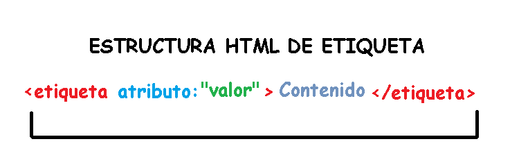

Si quieres aprender a realizar páginas web este es el lugar. Aquí conocerás los conceptos
necesarios para crear tu propia página. Necesitas tiempo y esfuerzo para aprender y crear.
El HTML tiene una estructura básica y componentes con el que se va armando la página que quieres.
Las etiquetas son parte fundamental del contenido que quieres mostrar y estas a su vez tiene elementos y características.
Vamos a aprender!!
Etiquetas básicas de HTML

Las etiquetas en HTML son trozos de texto que le dan formato a los contenidos que se muestran en las paginas web
Las etiquetas estan en todo el archivo y se pueden combinar entre si. Algunas tienen apertura y cierre y otras solo inicio.
Html no tiene forma de generar un error por tal razón se debe tener en cuenta cerrar las etiquetas que así lo requieren
Boté, J. (2013). Aprende HTML efectivo: Conceptos básicos para crear páginas web. Juanjo Boté.
https://books.google.com.co/books?hl=es&lr=&id=CcoRL_3mRl8C&oi=fnd&pg=PT6&dq=etiquetas+html+basicas&ots=zxWGKprzmT&sig=ocTMFG-np5G97K9qQfP8622YWdk&redir_esc=y#v=onepage&q&f=false
Atributos y Valores de las etiquetas

Los atributos de las etiquetas se utilizan para dar caracteristicas especificas. Un atributo puede generar un link o ser informativo. Se pueden usar para identificar el elemento dentro del cuerpo del archivo.
Y estos atributos a su vez se les puede asignar un valor que puede ser una descripcion, una ubicacion de un archivo,
Equipo Vértice. (2009). Diseño básico de páginas web en HTML. Editorial Vértice.
https://books.google.com.co/books?hl=es&lr=&id=Q4VL8Tiy7gcC&oi=fnd&pg=PP2&dq=atributos+y+valores+html&ots=Vk62FWcrrf&sig=5QlKWv34cwAuy9_F1r1e0FJ3kdY&redir_esc=y#v=onepage&q=atributos%20y%20valores%20html&f=false